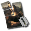

PosteRazor
Dieser Artikel wurde für die folgenden Ubuntu-Versionen getestet:
Ubuntu 16.04 Xenial Xerus
Ubuntu 14.04 Trusty Tahr
Zum Verständnis dieses Artikels sind folgende Seiten hilfreich:

PosteRazor  ist ein Programm, das es möglich macht, große Rasterbilddateien in mehrere Teile zu zerschneiden. Anschließend kann man diese Teile drucken und wieder zu einem Ganzen zusammenfügen. PosteRazor automatisiert die Druckvorstufe für den großformatigen Posterdruck und macht billigen Posterdruck auch mit A4-Druckern möglich und steht neben Linux auch auch für Windows und Mac OS X zur Verfügung.
ist ein Programm, das es möglich macht, große Rasterbilddateien in mehrere Teile zu zerschneiden. Anschließend kann man diese Teile drucken und wieder zu einem Ganzen zusammenfügen. PosteRazor automatisiert die Druckvorstufe für den großformatigen Posterdruck und macht billigen Posterdruck auch mit A4-Druckern möglich und steht neben Linux auch auch für Windows und Mac OS X zur Verfügung.
Als Ausgangsmaterial braucht der PosteRazor eine Rasterbilddatei (Bitmap). Das Endprodukt ist ein Poster in Form eines mehrseitigen PDF-Dokuments. Eine einfach zu bedienende Benutzerschnittstelle im Assistenten-Stil leitet durch die fünf erforderlichen Schritte.
Installation¶
PosteRazor ist in den offiziellen Paketquellen enthalten und kann über das folgende Paket installiert werden [1]:
posterazor (universe)
 mit apturl
mit apturl
Paketliste zum Kopieren:
sudo apt-get install posterazor
sudo aptitude install posterazor
Benutzung¶
Nachdem man das Programm PosteRazor gestartet hat [4], wird man durch eine fünfteiligen Assistenten geführt, der einem jeden Arbeitsschritt ansagt.
"Rasterbild auswählen": Hier wählt man die Bilddatei, die PosteRazor zerteilen soll. Als Quelldatei können alle Dateitypen verwendet werden die FreeImage
 lesen kann, bspw. JPG, PNG, BMP usw. Die Quelldatei sollte groß genug sein, damit das Endergebnis nicht durch Vergrößern an Qualität verliert. Ein JPG einer 8 Megapixelkamera gedruckt mit 300dpi lässt sich beispielsweise unvergrößert (mit 24 A4 Seiten) im Format A0 abbilden.
lesen kann, bspw. JPG, PNG, BMP usw. Die Quelldatei sollte groß genug sein, damit das Endergebnis nicht durch Vergrößern an Qualität verliert. Ein JPG einer 8 Megapixelkamera gedruckt mit 300dpi lässt sich beispielsweise unvergrößert (mit 24 A4 Seiten) im Format A0 abbilden. "Druckmaße definieren": Das verwendete Druckformat (meist A4) sowie Orientierung (Hoch-, Querformat) wird hier samt der druckerspezifischen Ränder angegeben.
"Überlappungen definieren": Das Definieren der Überlappungen beim Druck hilft später beim Anordnen der Bilder sowie für den Fall, dass beim Wegschneiden des weißen Randes etwas zu viel weggeschnitten wird.
"Finale Postergröße definieren": Hier wird bestimmt, auf wie vielen Blättern das Endergebnis verteilt werden soll. Diese Angabe erfolgt entweder über absolute Maße (in cm), Größe in Seiten oder eine prozentuale Eingabe. Über 100% (des Originalbilds) sollten nur gewählt werden, wenn ein gewisser Unschärfe-Effekt gewünscht ist, die Bilder wirken sonst aufgebläht.
"Ausgangsdatei speichern": Das Endergebnis ist ein PDF-Dokument mit mehreren Seiten, welches im letzten Schritt abgespeichert werden muss.
| 1. Rasterbild auswählen |
| 2. Druckmaße |
| 3. Überlappungen |
| 4. Finale Postergröße |
| 5. Ausgangsdatei speichern |
Druck und Posterzusammenstellung¶
| Endergebnis an der Wand |
Mit dem anschließenden Druckvorgang hat PosteRazor nichts mehr zu tun. Das ausgegebene PDF-Dokument wird geöffnet und auf gewohntem Wege gedruckt. Je nach Dimension und Anzahl der Einzelblätter wird die Zusammenstellung des Posters zur Herausforderung. Als kleiner Tipp eines geplagten Posterbastlers sei Klebegummi (z.b. "UHU Patafix") genannt. Wesentlich freundlicher als Klebestreifen beim Ablösen von verputzen Wänden ist er auch noch einfach zu handhaben und hält die einzelnen Blätter sicher an der Wand. Rechts eine Abbildung für ein solches Poster an der Wand.
Problembehebung¶
PDF-Datei als Eingabe verwenden¶
Da PDF-Dateien nicht direkt verwendet werden können, müssen diese zuerst in ein Rasterbild umgewandelt werden. Am einfachsten geht das mit convert aus der Programmsammlung ImageMagick. In einem Terminal-Fenster gibt man Folgendes ein:
convert -density 200 eingabebild.pdf ausgabebild.png
Das ausgabebild.png kann dann in PosteRazor als Eingabe verwendet werden.
 Übersichtsartikel
Übersichtsartikel- Erstellt mit Inyoka
-
 2004 – 2017 ubuntuusers.de • Einige Rechte vorbehalten
2004 – 2017 ubuntuusers.de • Einige Rechte vorbehalten
Lizenz • Kontakt • Datenschutz • Impressum • Serverstatus -
Serverhousing gespendet von